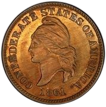
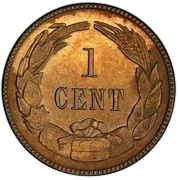
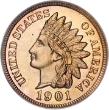
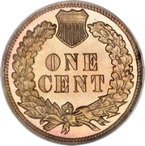
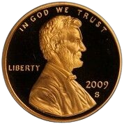
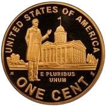

1861
This coin was issued by the Confederate States of America, a federal republic constituted by the 11 Southern states which seceded from the United States after the election of Abraham Lincoln as President.
 1864-1909
Minted for over 50 years, Indian Head cents are widely considered the most beautiful copper coins in American history. Introduced shortly before the War between the States in 1859, they were struck by the U.S. Mint until 1909. Designed by James Longacre, these historic cents were the nation's first coinage tribute to the noble, proud American Indian. His Longacre design also represented the first time that official United States Mint coins featured a distinctly American motif. The standard weight of this coin was 48 grains.
 2009
The proof and satin finish are made to commemorate 100 years of the Lincoln cent by using the original 95% copper alloy.
 